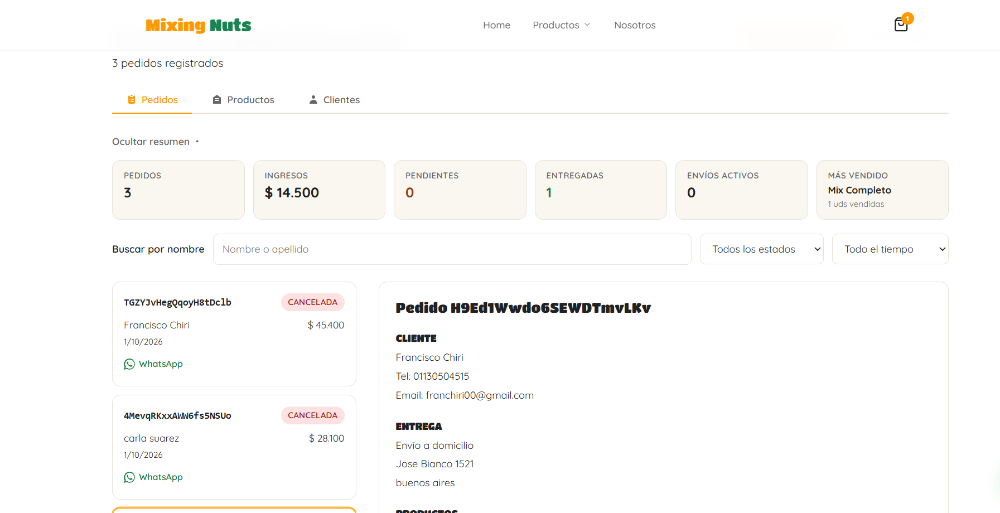
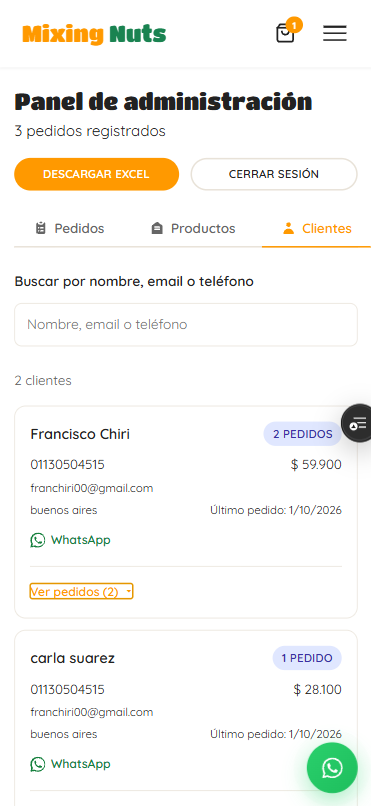

La gestión de stock ecommerce no consiste solo en contar cajas. Implica saber qué está disponible, qué está reservado y qué productos necesitan reposición antes de que una venta se frene. Para un emprendimiento pequeño, ordenar este flujo puede marcar la diferencia entre crecer y pasar el día corrigiendo planillas. Las capturas que acompañan este artículo son de Mixing Nuts, uno de los proyectos que gestiona su catálogo, pedidos y stock con eStock.
Por qué aparecen los errores de inventario
Los desajustes suelen aparecer cuando se actualiza el inventario en distintos lugares: una planilla, el marketplace, la tienda física y los mensajes de WhatsApp. También influyen las devoluciones que no se registran, las ventas canceladas y los productos con variantes que comparten unidades.
Señales de que necesitás ordenar el stock
- Publicás productos que después no podés entregar.
- El equipo consulta varias planillas para responder una pregunta.
- El stock disponible no coincide con el conteo físico.
- Descubrís faltantes recién cuando llega un pedido.
Un método práctico para organizarlo
1. Definí un catálogo único
Cada producto debe tener un nombre, SKU, variante y unidad de medida inequívocos. Evitá tener “remera negra” repetida con pequeñas diferencias. Un catálogo consistente permite detectar movimientos y analizar ventas sin duplicados.
2. Separá stock físico, reservado y disponible
El stock físico es lo que existe en el depósito. El reservado corresponde a pedidos todavía no despachados y el disponible es lo que realmente podés ofrecer. Esta separación evita vender una unidad que ya está comprometida.

3. Establecé un stock mínimo
Calculá cuántas unidades vendés durante el tiempo habitual de reposición y agregá un margen para la variación de demanda. Ese número no es universal: cambia por producto, temporada y proveedor. Revisalo cada mes con datos reales.
4. Registrá cada movimiento
Entradas, ventas, ajustes, devoluciones y bajas deben dejar un registro. No hace falta comenzar con un sistema complejo, pero sí con una única fuente de verdad que todo el equipo pueda consultar.
Cómo sostener el control sin trabajar el doble
- Hacé un conteo inicial y corregí diferencias antes de publicar.
- Revisá semanalmente los productos de mayor rotación.
- Usá alertas para detectar niveles bajos antes de quedarte sin unidades.
- Compará inventario y ventas al cierre de cada mes.

El listado de clientes y el estado del stock se pueden ver desde el celular, para controlar el negocio en todo momento y desde cualquier lugar.
Si tu operación crece, centralizar productos, pedidos y existencias reduce la carga manual. En la página de soluciones para importadores y mayoristas podés ver cómo eStock reúne esas tareas en un panel, mientras que en los planes de eStock encontrás las opciones disponibles.
¿Seguís controlando el stock manualmente?
Con eStock podés centralizar productos, stock y pedidos en un solo lugar para vender con información actualizada.
Hablar con eStock